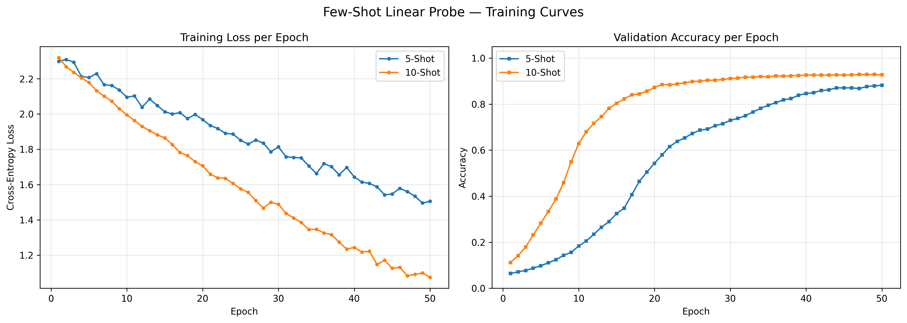
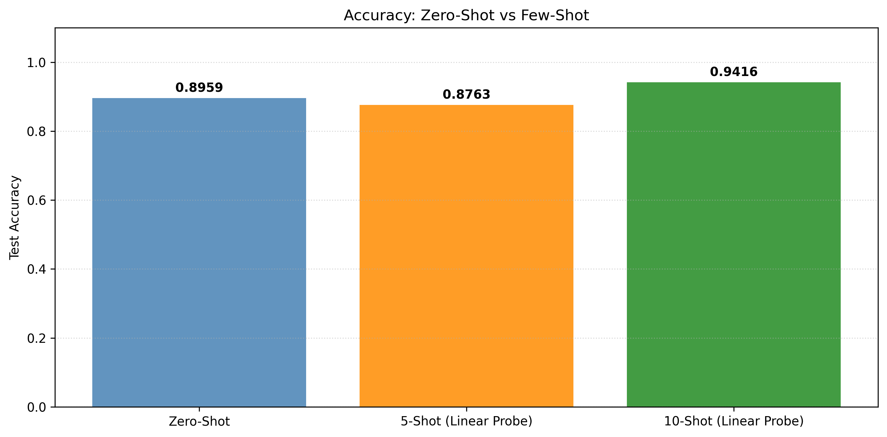
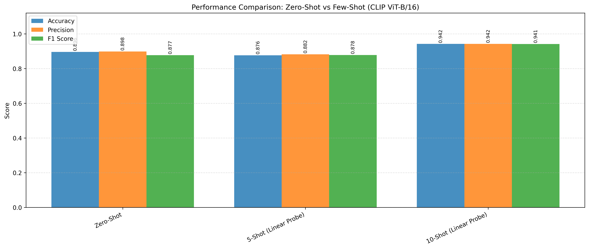
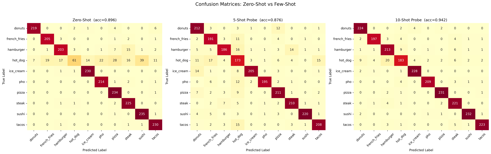
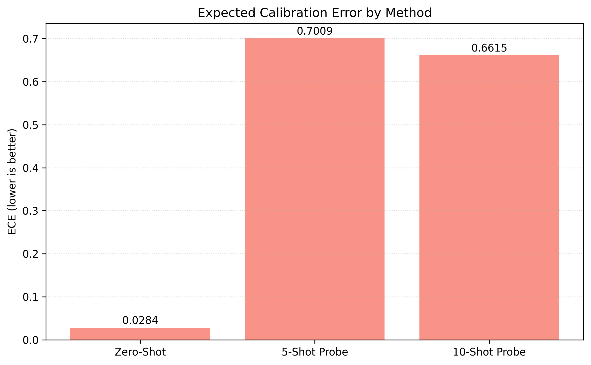
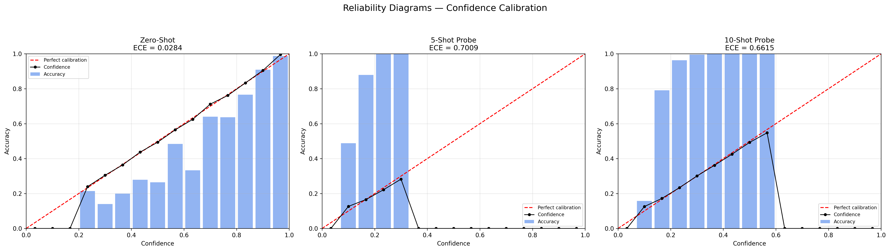

Zero-Shot and Few-Shot Approaches using OpenAI CLIP (ViT-B/16) on UPMC Food-101 (10-class subset)
This report presents a systematic evaluation of OpenAI CLIP (ViT-B/16) for food image classification across three learning paradigms: zero-shot inference, 5-shot linear probing, and 10-shot linear probing. We leverage CLIP's joint vision-language embedding space to classify images from a 10-class subset of the UPMC Food-101 dataset without requiring large labeled training sets.
Traditional supervised classifiers demand thousands of labeled examples per class. CLIP's contrastive pretraining on 400M image-text pairs enables meaningful classification with little to no task-specific data — a critical advantage in real-world settings where annotation is expensive. We test how far this zero-shot capability reaches, and how quickly it improves with just a handful of labeled examples.
The experiment covers 10 visually distinct (yet sometimes confusable) food categories:
donuts, french_fries, hamburger, hot_dog, ice_creampho, pizza, steak, sushi, tacos"a photo of {class}" to align with CLIP's pretraining distribution.The UPMC Food-101 dataset is a large-scale multimodal food collection pairing images with recipe titles. We use a curated 10-class subset balanced across categories, split into train, validation, and test sets.
preprocess pipeline (resize → center crop → normalize with ImageNet stats)Each sample provides both an image and an associated text caption (recipe title from the dataset). For zero-shot classification, the image embedding is averaged with the caption embedding before cosine similarity is computed. For the linear probe, image and text embeddings are concatenated (resulting in a 1024-dim vector) and passed through the linear head.
The ZeroShotCLIP classifier compares each query's fused embedding against pre-computed class prototype embeddings — one per category, generated from the prompt "a photo of <class>". The class with the highest cosine similarity is selected as the prediction. No gradient updates are performed; the model is purely inference-based.
Without a single labeled training example for the downstream task, CLIP ViT-B/16 achieves 89.6% accuracy — a testament to the power of large-scale contrastive pretraining. The model's joint vision-language embedding effectively generalises to unseen classification tasks purely through natural language prompts.
The LinearProbe model appends a single trainable linear layer on top of frozen CLIP embeddings. The backbone is completely frozen (no gradient flow through CLIP), making training fast and data-efficient. The input dimension is 512 × 2 = 1024 (image + text concatenation), and the output is a 10-class logit vector trained with cross-entropy loss.
1e-4Both 5-shot and 10-shot probes converge smoothly. The 10-shot probe trains faster and reaches a higher plateau — consistent with the larger support set giving better gradient signal per epoch.

Figure 4.1 — Cross-entropy loss (left) and validation accuracy (right) across 50 training epochs for 5-shot and 10-shot linear probes.

Figure 5.1 — Test accuracy for Zero-Shot, 5-Shot (Linear Probe), and 10-Shot (Linear Probe) methods.

Figure 5.2 — Accuracy, Precision, and F1 Score for all three classification methods using CLIP ViT-B/16.
| Method | Accuracy | Precision | F1 Score | Training Samples |
|---|---|---|---|---|
| Zero-Shot CLIP | 0.8959 | 0.898 | 0.877 | 0 |
| 5-Shot (Linear Probe) | 0.8763 | 0.882 | 0.878 | 50 |
| 10-Shot (Linear Probe) | 0.9416 | 0.942 | 0.941 | 100 |
Table 5.1 — Best values highlighted in green.
Notably, the 5-shot linear probe (87.6%) scores lower than zero-shot (89.6%). With only 5 examples per class, the probe does not yet have sufficient signal to adapt the decision boundary better than CLIP's pretrained similarity. This "few-shot valley" is a known phenomenon — a few-shot linear probe requires enough examples to outweigh the prior embedded in CLIP's text-image alignment. At 10 shots, the probe surpasses zero-shot by a clear margin (+4.6%).
Confusion matrices reveal which categories are most commonly confused. Since all three methods share the same 10-class label space, we can directly compare error patterns across paradigms.

Figure 6.1 — Confusion matrices for Zero-Shot (acc=0.896), 5-Shot Probe (acc=0.876), and 10-Shot Probe (acc=0.942).
hamburger, steak, and french_fries. This reflects genuine visual ambiguity between processed meat presentations.hot_dog and hamburger compared to both other methods.Zero-shot CLIP benefits from semantic discrimination — the text embedding for "hot dog" vs. "hamburger" is inherently distinct, guiding the classifier even when visual features overlap. The linear probe must learn this distinction from very few examples, which explains its higher hot_dog confusion at 5 shots.
Calibration measures whether a model's predicted confidence scores are trustworthy — i.e., when it says "90% confident", is it right ~90% of the time? This is critical in real-world deployments where confidence thresholds gate downstream decisions.

Figure 7.1 — Expected Calibration Error by method. Lower is better.

Figure 7.2 — Reliability diagrams. Bars show empirical accuracy per confidence bin; the black line traces mean confidence. The red dashed line represents perfect calibration.
Zero-shot CLIP is exceptionally well-calibrated (ECE = 0.028). The reliability diagram shows the confidence line tracking nearly perfectly along the diagonal — meaning its softmax probabilities genuinely reflect predictive uncertainty. This is a known property of CLIP's cosine similarity scores when used without temperature rescaling.
Linear probe models are severely overconfident (ECE ≈ 0.66–0.70). Because the linear head is trained with cross-entropy on a tiny support set (50–100 samples), it collapses logit distributions towards very high confidence at relatively low actual accuracy bands. Calibration techniques like temperature scaling or Platt scaling would be essential before deploying these models in production.
The calibration gap between zero-shot and few-shot methods reveals a subtle trade-off:
CLIP ViT-B/16 demonstrates strong food classification capability across all tested paradigms:
Test the multimodal food classification model directly below. Upload an image and provide a text description to evaluate the prediction power of different modes.
Note: If the demo shows a "500 Server Error", it means the Hugging Face server is currently asleep. Click here to wake it up!